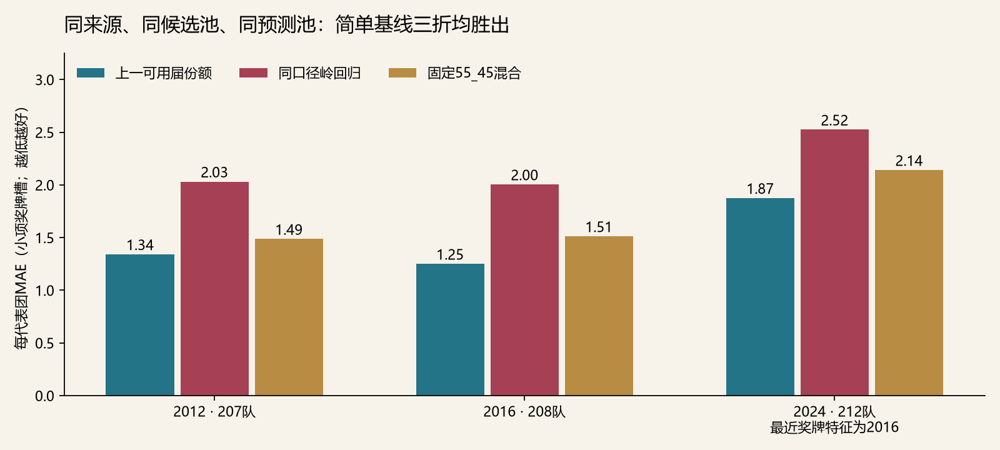

新增独立基准把历史输入、训练目标和输出都统一到小项奖牌槽代理；逐折用更早届次进行内部调参。二次来源情景下，2012、2016、2024三折中，历史份额基线的全体MAE均低于岭回归及固定55/45混合模型。不能据此宣称机器学习提高了预测能力。
先看边界：这不是已发布2028最终集成的重训或完整验证。历史小项代理可能合并同NOC同色多枚；二次来源不是现行IOC逐项认证。2024目标使用既有政府开放数据逐项表，其结构与历史代理仍不完全等价。历史资料含事后追溯修订，缺逐届赛前冻结快照；严格时间切分不等于严格真实时点数据。

| 留出届次 | 历史份额 | 岭回归 | 固定混合 |
|---|---|---|---|
| 2012 | 1.341 | 2.031 | 1.486 |
| 2016 | 1.250 | 2.004 | 1.512 |
| 2024 | 1.875 | 2.524 | 2.141 |
2020小项字段泛化，因此不进入奖牌特征；2024回放最近可用奖牌届次为2016，实际是八年间隔，不能当作通常的一届预测。2020参赛身份仍可用于候选代表团筛选。2028新增运动排名、资格、主场加成与最终集成区间覆盖率，均不在本基准验证范围。
候选代表团仅取目标前最近三届的参赛记录；训练与内部验证届次均早于外层留出届次。模型为代表团总量岭回归，输入为前两次可用份额、趋势、近三次均值与波动及年份间隔；正则系数仅在更早届次选择。目标奖牌池由此前三次总量按年度趋势外推，实际池只评分。每折训练来源下的三模型使用相同预测池和评分代表团集合。
全体评分包含赛前候选中的零奖牌代表团，并补入当届未见获奖代表团、预测置零；三折分别为207、208、212队。2016、2024各有一个未见获奖身份，保留误差，不用赛后身份映射修补。MAE分母与旧132队回放不同，不能直接横比；同时公开实际至少5枚子集、RMSE与完整逐队误差。
分开三步：A预测对A标签；保持A预测不动、改用B标签评分；再用B历史重新调参训练、对B标签评分。这样区分“改评分标签”和“重新训练”的影响。两套来源中的岭回归和固定混合模型均未在全体MAE上胜过各自基线；这只评价本独立基准，不证明原RF/GB模型必然相同。